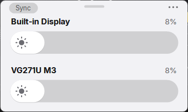
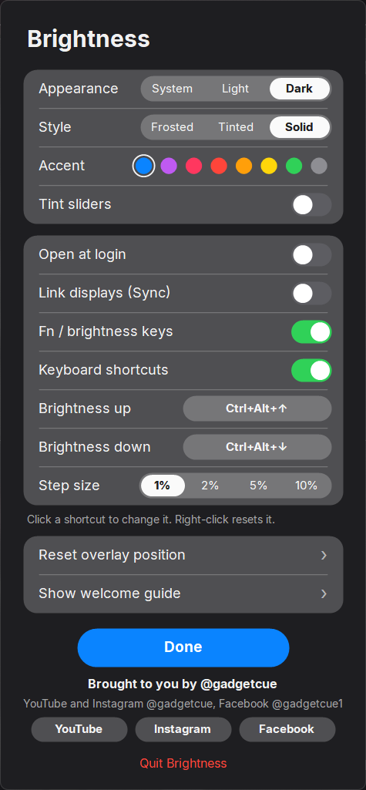

One control for every display.
A tiny tray app that sets the brightness of your laptop screen and external monitors from one Apple-style panel.
Version 1.0.4 · Windows 10 and 11 · About 1.2 MB

A tiny tray app that sets the brightness of your laptop screen and external monitors from one Apple-style panel.
Version 1.0.4 · Windows 10 and 11 · About 1.2 MB
A slider for each screen, with an optional Sync to move them together.

Shortcuts, step size, light or dark, and eight accent colours.

BrightnessController-Setup-1.0.4.exe and run it.Yes, if the monitor supports DDC/CI. Laptop screens work through WMI.
No. It idles at about 2 MB and has no background polling.